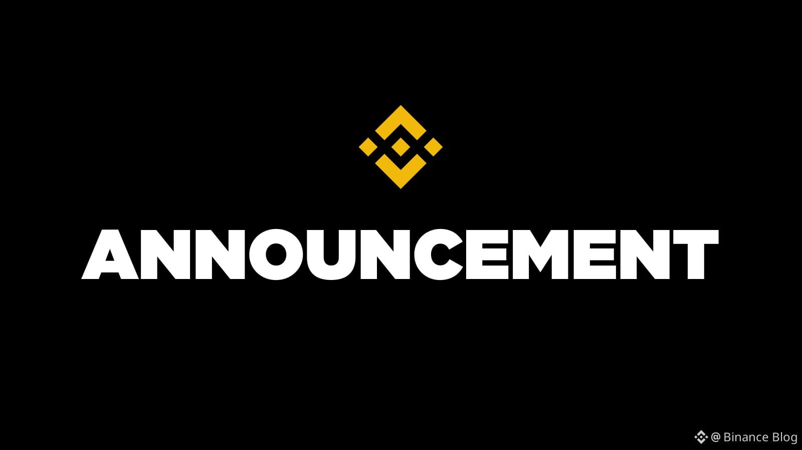

AI 단신 HELLO, HUMAN! / BRIEF 14
바이낸스 탈취 사고, 가짜 면접과 사내 AI 도구 악용
채용 과제로 위장한 악성코드에서 사내 AI 도구와 자산 이체 권한까지. 바이낸스가 공개한 초기 조사 결과를 살펴봅니다.

가상자산 거래소 바이낸스가 11월 3일, 약 63억 4,000만 달러 규모의 자산 탈취 사고에 대한 초기 조사 결과를 공개했습니다. 자금 유출은 10월 29일 UTC 기준으로 시작됐으며, 한국시간으로는 30일입니다. 회사는 가짜 채용 면접과 악성코드, 사내 AI 도구를 이용한 침입이 수개월에 걸쳐 이어졌다고 설명했습니다. 공식 조사 보고서 ↗
보고서는 피해 직원 세 명을 A·B·C로 구분합니다. 먼저 6월, A(지갑 개발·운영 엔지니어)가 코딩 도구를 설치하려다 변조된 설치 프로그램을 내려받았습니다. 회사는 A의 기기를 교체하고 관련 인증정보를 바꿨지만, A의 담당 업무와 동료 정보는 이미 노출됐다고 설명했습니다.
9월에 가짜 채용 면접을 보고 코딩 과제를 받은 사람은 B(소프트웨어 엔지니어)입니다. B는 A와 다른 직원입니다. B가 과제를 자신의 업무용 컴퓨터에 내려받아 설치하는 과정에서 악성코드가 실행됐다고 회사는 밝혔습니다.
B를 겨냥한 이 가짜 면접은 사회공학적 공격(Social Engineering)에 해당합니다. 사람의 신뢰나 심리를 이용해 파일을 실행하거나 정보를 넘기도록 유도하는 수법입니다. 보고서에 따르면 공격자는 채용 담당자와 CEO를 사칭하고 영상 면접으로 B의 신뢰를 얻었습니다. 악성 과제 실행을 자연스러운 채용 절차처럼 보이게 만든 것입니다.
10월 20일에는 공격자가 B의 감염된 컴퓨터와 사내 AI 도구를 발판으로 A와 C(또 다른 지갑 개발 엔지니어)의 시스템까지 장악했다고 합니다. 이 과정에서 A의 컴퓨터에 있던 배포 권한 토큰을 발견했습니다. 이어 29일, 공격자가 C의 컴퓨터에 로그인해 A에게서 탈취한 배포 권한을 사용했고, 악성 프로그램과 지갑 서명 서비스를 이용해 정상 출금 절차 밖에서 자산을 옮겼다는 설명입니다.
AI 도구의 이름과 구체적인 악용 방식은 공개되지 않았습니다. The Verge도 이 도구가 왜 공격에 도움이 됐는지 설명이 부족하다고 지적했습니다. 공개 자료만으로 특정 모델의 결함이나 프롬프트 인젝션을 원인으로 단정할 수는 없습니다. The Verge 보도 ↗
이더리움 지갑에서는 출금을 중단한 뒤에도 블록체인에 남아 있던 악성 권한 위임이 유효해, 이를 별도로 취소해야 했다고 회사는 밝혔습니다. 바이낸스는 보고서 공개 시점까지 약 28억 5,000만 달러를 동결·차단했고 손실은 회사가 부담한다고 설명했습니다. 관련 시스템과 AI 도구·접근 통제를 재구축했지만, 조사는 진행 중이며 외부 보안 전문가의 추가 검토를 받겠다고 했습니다.
사건의 흐름 · 8단계로 읽기
세 직원의 기기와 권한,
공격은 어떻게 이어졌나
바이낸스의 초기 보고서를 바탕으로 그린 설명용 도식입니다. 실제 내부 화면이나 공격 재현은 아닙니다. 단계별로 어떤 정보와 권한이 넘어갔는지 살펴봅니다.
가짜 채용 과제를 받은 직원은 B입니다. A·B·C는 보고서에 등장하는 서로 다른 세 직원입니다.
- A변조 설치 파일을 받은 직원
- 지갑 개발·운영 엔지니어. 6월 변조 설치 파일로 정보가 노출됐고, 10월에는 배포 권한을 탈취당했습니다.
- B가짜 면접·채용 과제 대상
- 소프트웨어 엔지니어. 9월 악성 채용 과제를 설치해 업무용 컴퓨터가 감염됐습니다.
- C배포 조작에 이용된 기기의 주인
- 또 다른 지갑 개발 엔지니어. 10월에 기기를 장악당했습니다. 공격자는 C의 컴퓨터에 로그인해 A의 권한으로 컨테이너를 배포했습니다.
9월 이후의 침입 흐름B의 감염된 기기 → 사내 AI 도구 → A·C의 시스템이어 공격자가 C의 컴퓨터에서 A의 배포 권한을 사용했습니다.
실선 · 회사가 설명한 경로점선 테두리 · 세부 방식 미공개
01 / 08 · 2026년 6월
6월, A의 기기에서 업무·동료 정보가 노출됩니다
설치 파일AI 코딩 도구를 설치하려던 과정
회사는 A의 기기를 교체하고 관련 인증정보를 바꿨다고 밝혔습니다. 다만 A의 역할과 동료 정보는 공격자에게 넘어갔다고 설명했습니다.
여기서 구분할 점이때부터 같은 악성코드가 계속 남아 있었다고 보고서가 밝힌 것은 아닙니다. 기기 대응과 정보 노출을 나눠 봐야 합니다.
02 / 08 · 2026년 9월
9월, B가 가짜 채용 과제를 받아 설치합니다
CEO 사칭B에게 영상 면접·소셜 계정 제시
회사 설명에 따르면 B의 컴퓨터에서 Python 버전 관리 도구인 pyenv의 정상 구성요소가 악성 버전으로 교체됐습니다. 당시 기기 보안 도구는 이를 탐지하지 못했다고 합니다.
B를 속여 만든 침입 경로공격자는 그럴듯한 채용 절차로 B의 신뢰를 얻어 과제를 실행하게 했습니다. 회사가 설명한 일련의 공격에서 6월에는 A가 설치 파일에, 9월에는 B가 채용 과제에 속은 것입니다.
03 / 08 · 10월 20일
B의 감염 기기에서 A·C의 시스템으로 침입이 번집니다
보고서는 B의 기기와 사내 AI 도구를 이용해 A·C의 시스템을 장악했다고 설명합니다. A에게서 발견한 토큰은 서버에 실행 환경을 배포할 수 있는 권한과 연결돼 있었습니다.
점선으로 남긴 이유AI가 어떤 요청을 받았고 어떤 기능으로 접근을 도왔는지는 공개되지 않았습니다. 프롬프트 인젝션이나 특정 모델의 취약점으로 채워 넣을 수 없는 구간입니다.
04 / 08 · 10월 29일 · 최초 자금 유출 전
공격자가 C의 기기에서 A의 배포 권한을 사용합니다
컨테이너는 프로그램과 실행에 필요한 환경을 묶어 배포하는 방식입니다. 회사는 공격자가 C의 컴퓨터에 로그인해 A의 인증정보로 컨테이너를 배포하고 악성 스크립트를 실행했다고 밝혔습니다.
넘어간 경계직원 기기에 대한 접근이 배포 권한과 지갑 서명 기능의 악용으로 이어졌습니다. C의 컴퓨터는 배포를 조작한 기기이며, 컨테이너의 실제 실행 위치와 서명 서비스에 이르는 세부 연결 구조는 공개되지 않았습니다.
05 / 08 · 10월 29일 20:05~20:09 UTC
4분 사이, 다섯 지갑에서 XRP가 빠져나갑니다
보고서에는 다음 자산의 유출도 나옵니다. 아래 수량 전체가 같은 4분 안에 이동했다는 뜻은 아닙니다. 각 이체의 상세 시각은 제시되지 않았습니다.
- SOL
- 약 970,500개
- OP
- 약 44,200,000개
- BTC
- 18,270개
이체 권한이 실제 자금 유출로바이낸스는 대규모 이체 알림을 받고 조사에 착수했다고 밝혔습니다. 핫월렛은 출금 등에 쓰기 위해 온라인으로 운영하는 지갑입니다.
06 / 08 · 10월 29일 · 공격 진행 중
이더리움 지갑에 악성 실행 권한이 남습니다
EIP-7702는 이더리움 계정이 지정한 스마트 계약의 코드를 자신의 계정에서 실행하도록 하는 기능입니다. 회사는 공격자가 서명 서비스를 이용해 50건의 서명된 거래를 제출하고 계정의 처리 순번(nonce)을 조작해 악성 위임을 설정했다고 설명했습니다. 이 단계는 이더리움 지갑의 공격 경로에 관한 설명입니다.
넘어간 경계권한이 블록체인에 기록되면 거래소 내부 서버를 멈추는 것과 별개로 남습니다. EIP-7702 규격 자체의 결함이 확인됐다는 뜻은 아닙니다.
‘위임’은 어떤 기능인가요?
계정이 어떤 계약의 코드를 사용할지 전자서명으로 지정하는 방식입니다. 이 지정은 한 번의 거래가 끝나도 유지되며, 바꾸거나 없애려면 유효한 서명이 담긴 새 승인을 체인에 반영해야 합니다. 여기서 승인은 사람이 화면에서 누르는 승인 버튼을 뜻하지 않습니다. EIP-7702 규격 ↗
07 / 08 · 10월 29일 · 긴급 대응
출금을 멈춰도, 이더리움의 위임 권한은 남습니다
거래소의 일반 출금 경로
이용자 출금 요청출금 중단일반 절차 제한
이미 이더리움에 만들어진 공격 경로
악성 위임 권한여전히 유효자산 이동 가능
회사는 출금·핫월렛 서비스를 멈춰도 기존 위임이 자동으로 사라지지 않았다고 설명했습니다. 협력사와 자산 동결을 진행하면서, 이더리움에 남은 위임 권한도 별도로 취소해야 했습니다.
서비스 중지와 권한 취소는 다른 작업‘새 요청을 받지 않기’만으로 ‘이미 부여한 실행 권한’까지 없어지지는 않습니다.
권한 취소에 왜 시간이 더 들었나요?
MPC(다자간 연산)를 이용한 지갑 서명은 키 정보를 여러 곳에 나눠 관리하고, 완전한 키를 한곳에 모으지 않은 채 서명을 공동으로 계산하는 방식입니다. 바이낸스는 당시 지갑 구성에서 즉시 취소에 쓸 단일 개인키가 없어 별도 절차를 개발·실행하느라 시간이 더 들었다고 설명했습니다. 이번 대응 과정에 관한 설명이며, MPC라면 모두 권한 취소가 불가능하거나 키가 유출됐다는 뜻은 아닙니다. NIST의 분산 서명 설명 ↗
08 / 08 · 10월 29일 밤~30일 새벽 UTC
마지막 이체 확정과 권한 제거 시점은 다릅니다
- 마지막 무단 이체 확정
- 2,961.9 ETH한국시간 10월 30일 08:56
- Binance14의 위임 코드 제거
- 새 승인 거래로 위임 해제한국시간 10월 30일 09:10
23:56에 확정된 거래는 앞서 전파돼 대기하던 거래였다고 회사는 설명했습니다. 00:10에는 Binance14 지갑의 위임 코드를 제거했다고 밝혔습니다.
첫 유출부터 마지막 확정까지 3시간 51분20:05와 23:56 사이의 간격입니다. 이 시간 내내 같은 속도로 자산이 빠져나갔다거나, 23:56에 모든 권한 취소가 끝났다는 뜻은 아닙니다.
보고서 공개 시점의 전체 피해 규모는 약 63억 4,000만 달러, 동결·차단은 약 28억 5,000만 달러입니다. 회사는 정산과 시세 변동에 따라 달라질 수 있는 수치라고 밝혔습니다. 동결·차단이 최종 회수나 고객 반환의 완료를 뜻하지는 않습니다.
원문과 확인 자료
THE VERGE · 2026. 11. 03 미국 동부시간 가짜 면접과 사내 AI 도구가 바이낸스 탈취 사고에 이용된 경위 원문 읽기- Binance Blog 공식 계정 · 초기 조사 결과와 대응 현황 · 2026. 11. 03 공개
- The Block · 공격 경로와 외부 보안 검토 계획 보도 · 2026. 11. 03
- EIP-7702 공식 규격 · 코드 위임의 유지와 제거 방식
- NIST · 키를 복원하지 않는 분산 서명 방식 설명 · 일반 원리 참고
2026년 11월 4일(한국시간), 공식 초기 보고서와 보도를 대조했습니다. 공격 경위·피해 규모·대응 현황은 회사 발표이며, 원본 로그나 자산 회수 결과를 독립적으로 검증하지 않았습니다. ‘헬로우 휴먼의 시선’은 이를 바탕으로 한 업무 제안입니다.
AI뉴스 목록으로 돌아가기